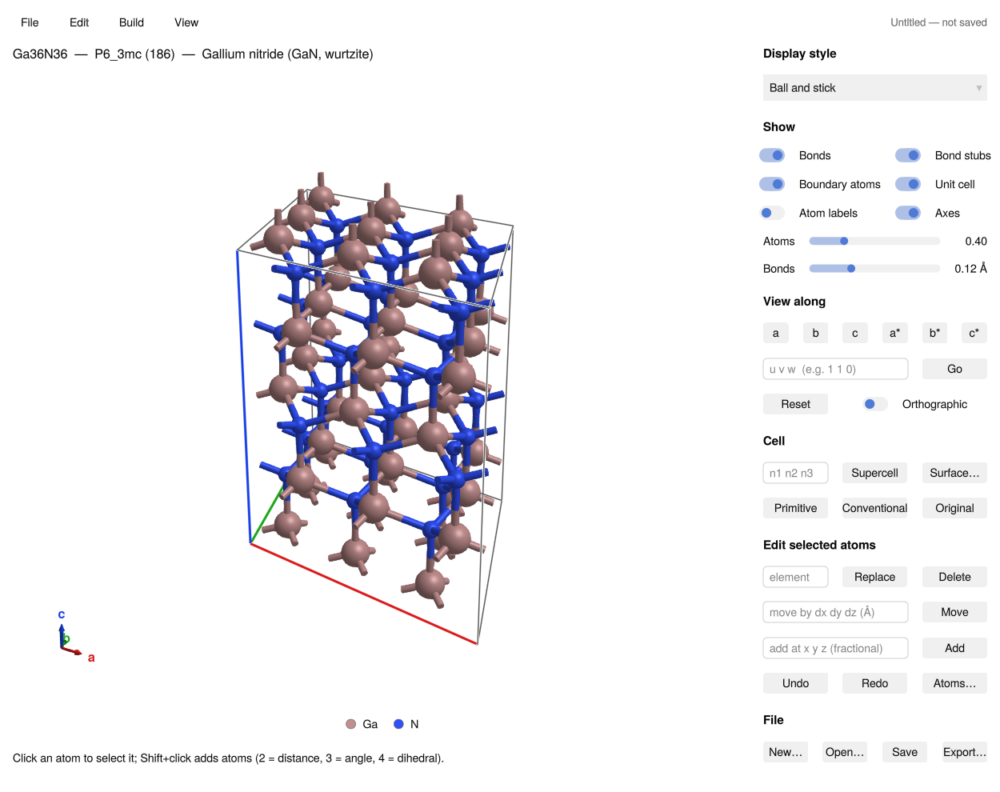
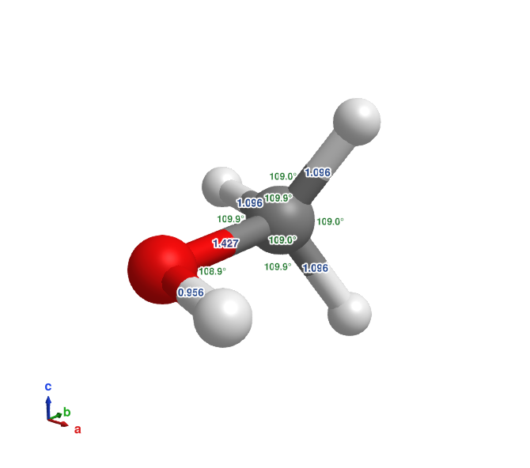

AtomBond.jl
AtomBond is a crystal-structure builder and interactive ball-and-stick viewer written in Julia with GLMakie. It is meant for preparing ab-initio (DFT) calculations: open or build a structure, edit it, set relaxation constraints, and export input files for VASP, Quantum ESPRESSO or CASTEP.

Features
- Viewer: ball and stick, CPK, stick and line styles; bonds across periodic boundaries; views along lattice and reciprocal axes or any [uvw]; orthographic camera; PNG export; several structures in tabs.
- Formats: reads and writes CIF, VASP POSCAR, Quantum ESPRESSO, CASTEP, FHI-aims, XSF, XYZ, PDB, LAMMPS, Materials Studio
.carand SHELX.res; also reads SIESTA, ABINIT, vasprun.xml, XDATCAR, cube and.xsd(File formats). - Building: supercells (including general matrices), primitive and conventional cells, surfaces and slabs, superlattices, molecules in a periodic box, shifting, rotating and wrapping atoms, bridging atoms (Building and editing).
- Editing: select atoms with the mouse, then delete, substitute, add or move them, with undo and redo.
- Analysis: space group detection (spglib); labels for bond lengths, angles, dihedrals, coordinates, charges and magnetic moments (Labels).
- DFT inputs: fixed atoms and cell constraints, k-point meshes and spin (DFT inputs).
- Structure library: 94 crystals and molecules: Crystallography Open Database structures and experimental geometries from the literature, each with its reference (Library and element data).

Installation
AtomBond needs Julia 1.10 or newer and OpenGL 3.3 (any desktop; on Windows it also runs in WSL2). It is not registered yet, so install it from GitHub:
using Pkg
Pkg.add(url="https://github.com/QuantumWorm/AtomBond.jl")Getting started
using AtomBond
visualize("structure.cif") # a file in any supported format
visualize(load_library("GaN")) # a structure from the built-in library
visualize() # nothing yet: build a new structurevisualize() opens an empty cell with the New structure tool on the right: pick a prototype (diamond, zincblende, rocksalt, wurtzite, perovskite, …) and type your elements and lattice constants, or keep the empty cell and add atoms one by one. Left-drag rotates, the scroll wheel zooms and right-drag pans. The first start takes a minute or two while Julia compiles GLMakie.
From a script (julia script.jl), keep the window open with
v = visualize("structure.cif")
wait(v.screen)The same functions work without a window; see Working from Julia code.
WSL2
Under WSL2, AtomBond draws with software OpenGL, because the WSL GPU driver (Mesa D3D12) can freeze when many items are added to an open window, as when a tool opens. That is fast enough for typical cells. To use the GPU anyway, start Julia with ATOMBOND_GPU=1; setting LIBGL_ALWAYS_SOFTWARE or GALLIUM_DRIVER yourself also takes precedence. Native Windows, macOS and Linux use the GPU.